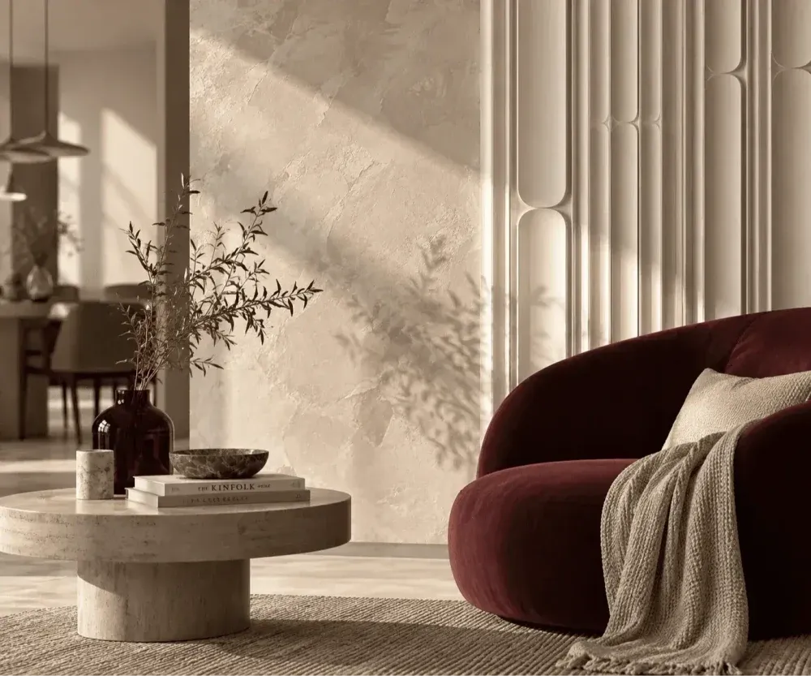
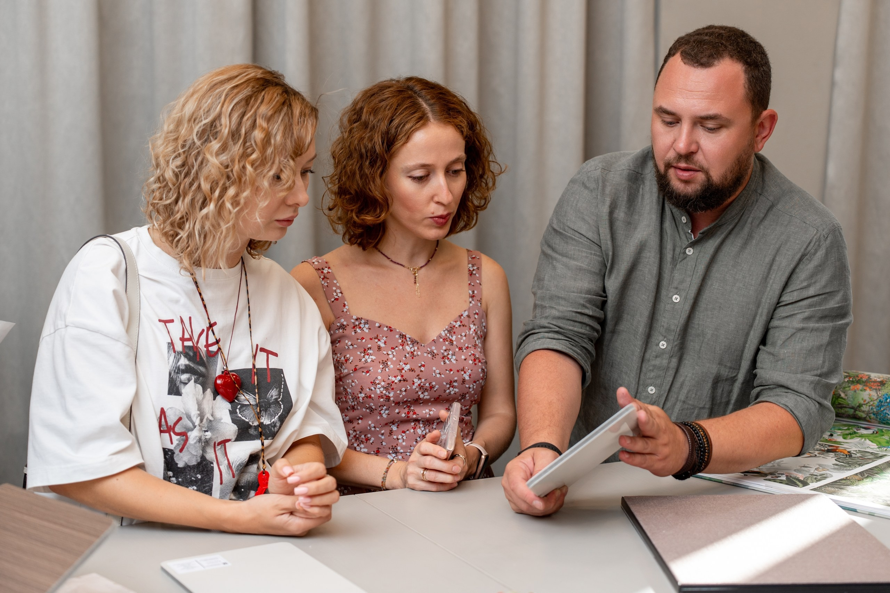
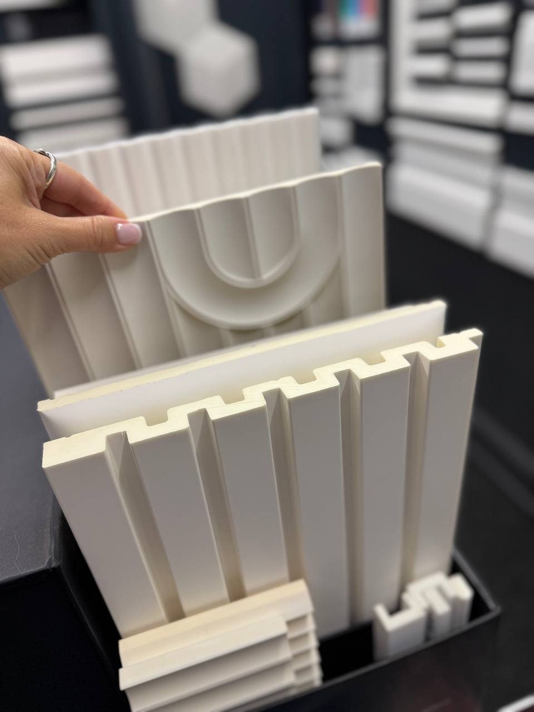
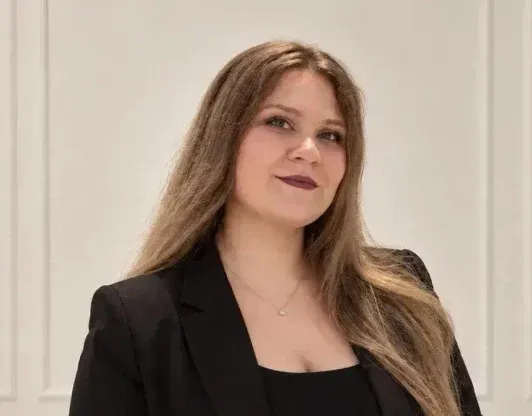

Расскажите о задаче
Принесите фотографию, планировку или готовый проект

Консультация и образцы на примерку — бесплатно
Ростов-на-Дону · пр. Михаила Нагибина, 30Л · ДЦ WEST
Фактуры, оттенки и детали для вашего пространства


Принесите фотографию, планировку или готовый проект
Посмотрите, как образцы сочетаются по цвету и фактуре
Примерьте образцы в своём интерьере и сравните их при вашем освещении
Обсудите количество, стоимость и условия заказа
Помогаем перейти от проекта к материалам на объекте
Подбор, расчёт и сопровождение комплектации — с вниманием к замыслу дизайнера и задачам мастера

Профессиональное сообщество
Мастер-классы, презентации коллекций и совместные проекты
Условия выдачи образцов, хранения и доставки согласуются с консультантом
Orac · RODECOR · Decaro · Casamance · Loymina · Artpole · BAMSTEK · Slate Lite · Flat Stone
Начните с настроения интерьера — поможем подобрать материалы
Посмотрите, как наши материалы работают в интерьере, и найдите идею для своего пространства
Выберите материалы для своего интерьера
Знакомимся с вашей идеей — находим подходящие материалы
Обсудим проект, сравним образцы и соберём сочетания для вашего пространства
Обсудить задачу
Подбор материалов
Поможет подобрать материалы и детали, которые сочетаются в вашем интерьере.
Подбор материалов
Панели, карнизы и молдинги — внимание к материалам, формам и деталям отделки.
Дизайн и подбор материалов
Поможет разобраться в оттенках и фактурах и найти сочетание для вашего пространства.
Да. Возьмите фотографию помещения, планировку, коллаж или готовый дизайн-проект — это поможет предметно обсудить материалы.
Подберём материалы и посчитаем количество по вашему проекту. Пришлите план и размеры помещения — поможем с расчётом.
Да, образцы панелей и лепного декора Orac привезём на примерку. Вы сможете оценить цвет, фактуру и сочетания в своём интерьере.
Добавьте материалы в подборку и отправьте её консультанту. Он уточнит стоимость, наличие и сроки для выбранного заказа.
Начнём с вашей идеи, фотографии или проекта
Подготовьте сообщение и отправьте его консультанту ВКонтакте. Фотографию можно приложить уже в диалоге.
+7 (909) 420-04-20Ростов-на-Дону
пр. Михаила Нагибина, 30Л
Пн–пт 10:00–19:00
Сб–вс 10:00–17:00
+7 (909) 420-04-20
info@martdecor.ru